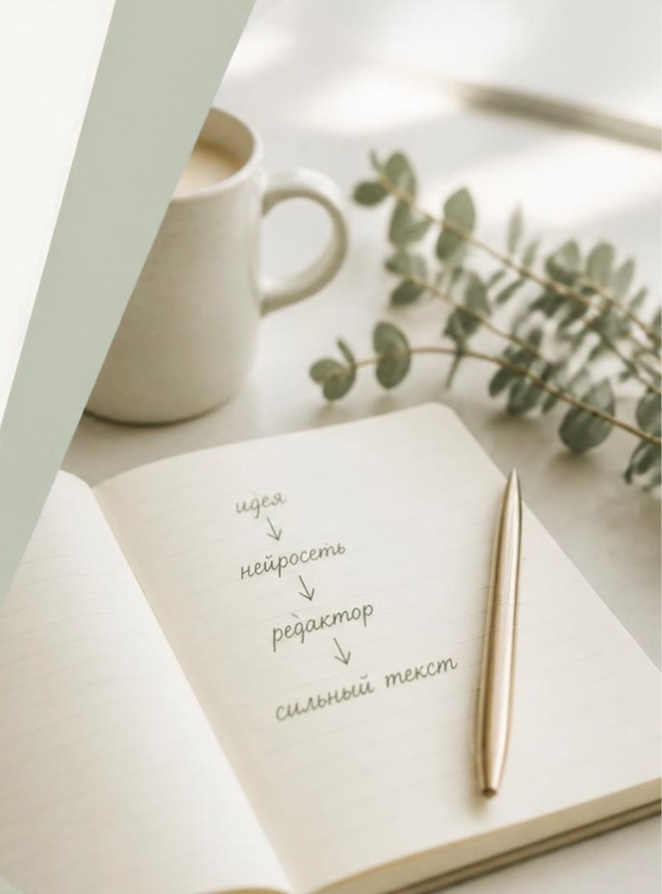
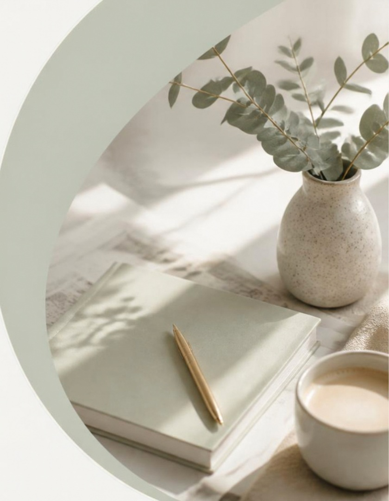
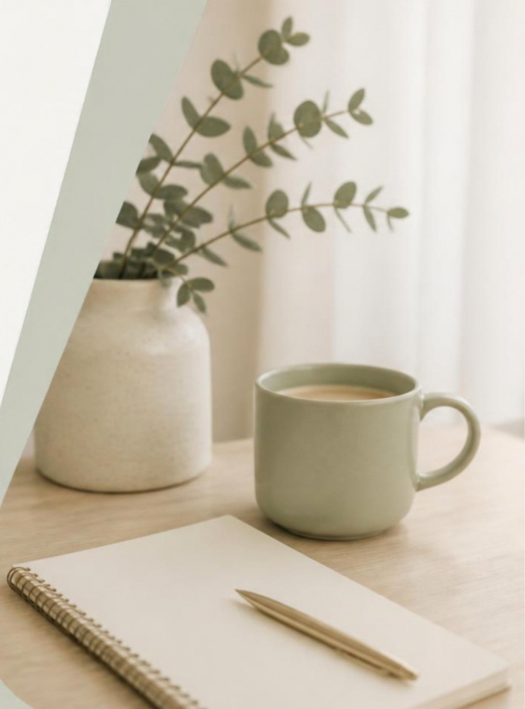

01 / БРИФ
Материалы от заказчика
Уточняю задачу, цели и собираю исходные данные.
Создаю контент с помощью ИИ, редактирую и довожу вручную. Смыслы, стиль, качество.
Использую нейросети для скорости и идей.
Отбираю лучшее и проверяю факты.
Дорабатываю стиль и структуру вручную.
Результат — точный, понятный, живой контент.


От первого брифа до готового контента — с вниманием к задаче на каждом этапе.
Уточняю задачу, цели и собираю исходные данные.
Использую нейросети, чтобы быстро наметить варианты и структуру.
Проверяю факты, дорабатываю стиль и усиливаю материал.
Передаю согласованный материал в нужном формате.
Демонстрационные примеры. Их можно заменить реальными работами и кейсами.

Демонстрационный пример до замены реальной работой.

Демонстрационный пример до замены реальной работой.

Демонстрационный пример до замены реальной работой.

Демонстрационный пример до замены реальной работой.
Чтобы начать, пришлите:
Напишите — и я предложу лучшее решение.
